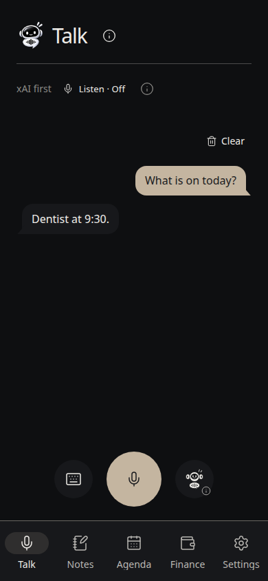
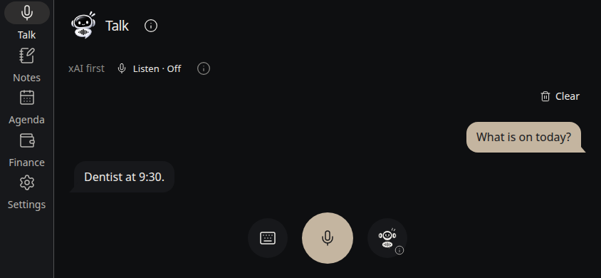

Talk
Open Talk and say the thing.
The bottom bar is Talk, Notes, Agenda, Finance, and Settings. The five destinations are centered, with even space, on a raised surface. Agenda holds Calendar, Reminders, Alarms, and Countdowns as tabs. Each tab is as wide as its label, centered in the row, with even gaps. People and Language are under Settings, in You. Backup and Memory are under On this phone. Wake word is under Voice, with Voice and AI, Daily voice budget, and Quiet gap. Phone access is under Spoken alerts. Every screen shares one header: the logo, the title, an info button, and a full-width divider. Back shows only when you open a Settings section. In landscape, navigation moves to a slim side rail. Talk changes the same notes, money, and dates you see on the screen.


Start and stop
- Open Talk and tap the control. Tap it again to hang up. What you say sits on the right, in the accent color. Grok’s reply sits on the left. Each one is a rounded bubble with a small tail. The conversation stays on screen while you are talking.
- Listen keeps the microphone after you leave the app. A notification means it is still open. Stop on that notification ends it. “Hey Grok” starts a turn only when Listen is on. Turning Listen off asks you to confirm. Turning it on does not.
- The wake word is trained on the phone from three recordings. The samples are not uploaded. Open the app once after a reboot before background listening can use the microphone.
- The quiet gap is 5 to 120 seconds, in steps of 5, on the Quiet gap row under Settings, Voice. After that pause the conversation ends and only the wake word remains.
Use headphones the first few times. On a loudspeaker the microphone hears the reply. Echo guard mutes the uplink while the app is speaking. Turn it off in Debug if you want to interrupt.
On this phone, Talk waits until you pause, then answers. A cloud voice session can keep the line open. 1min.ai writes the reply while Moonshine and the on-device voice stay on the phone.
The mark
The app mark is the robot with headphones and a speech bubble. On Talk it is a circle in the dock, beside the round microphone. It blinks when idle. The headphones move while Grok is listening. The eyes shift while Grok is thinking. The sound bars move while Grok is speaking. Tap it to open Voice status. If the phone is set to reduce motion, the mark stays still. While something is loading, the same character is the spinner. A download that reports its size fills a bar under it.
What a turn can do
During a session the assistant calls a tool, then tells you what happened. The tools cover notes, Agenda, People, messages and calls, Finance, music, settings, and web search. Two extra tools, remember_fact and forget_fact, exist only when Talk is running on this phone. They are not in the cloud tool list.
Deletes that the tool marks with confirmed ask for a clear yes before anything is removed: a reminder, alarm, or countdown, a person, a finance account or transaction or budget, and Listen off. Opening YouTube, the browser, a dialer, a text, WhatsApp, Signal, or email also waits for a yes. You still tap Send or Call in the other app when that tool only opens a draft or the dialer. place_call dials only after a second yes. answer_call, decline_call, and end_call run only when you say so.
Talk does not create an account, a card, or another record you did not ask for. Logging an expense matches a saved name. If none match, or two do, it asks. A new card is save_account, and only after you ask to add one.
One example in each language is the command list. The same ideas, written as speech, are in the voice guide.
Money, colors, and the home screen
Finance has no bank login. A missing rate is refused. The tabs are Overview, Activity, Accounts, Holdings, and Plan. They are centered, each as wide as its label, with even gaps. The savings rate is a larger donut, centered, with the percentage in the middle and Income and Expenses under it. Activity keeps transactions and repeating bills apart, and filters apply to both. If a repeating payment has no amount of its own, the row shows the card statement or the balance due, and says which. Accounts keeps banks, cash, cards, and loans in their own sections. Each section has an add row and an empty state, so you can keep more than one loan or debt. In Holdings, the shares add up to 100%. A total row shows the sum and a refresh icon, and the amounts sit on the right. Cash stays out until you include it. A sheet stays inside the safe area. The title and the footer stay put while the body scrolls. When you edit a movement, Save is the solid button and Delete is red text.
A charge on a card is spending. Paying the card, or a loan, is separate, so it is not counted as spending again. Under the chart you see income, expenses, and debt payments. What you still owe is listed on its own. The legend uses the chart colors, and in landscape it sits beside the chart. “Describe the money flow” says those same totals.
Plan is a budget for one month. An info icon sits beside the month name. An empty month is centered. Repeating bills stay in Activity. You can look 24 months back and 12 ahead. You see expected income, each limit next to what you already spent, what is left, and a savings target. An empty month can start from repeating bills, from recent months, or from both. In landscape the summary is on the left and the categories are on the right. “Set restaurants to 400 euros this month” sets that limit. Say a new amount and the same line changes. “How much is left for restaurants?” reads it. “Read the budget for this month” says income, spending, savings, and investments. “Am I over the plan?” says whether you have gone past it. “Fill the budget” or “Set up the budget” fills the month from repeating bills and recent spending. “Delete the restaurants line” and “Delete the budget for this month” ask first. Nothing is removed until you say yes.
Chart colors are saved per holding, account, category, income type, and money-flow item, included in backup, and used on every chart that shows that item. “Make silver gray” sets one. Resetting every color asks first.
Home-screen widgets follow the theme: Listen, Reminders, Coming up, Net worth, This month, Next 30 days, and Next. Themes are Graphite, Ink, Stone, Midnight, Carbon, Ivory, Sand, Forest, Plum, System, and Custom, under Settings.
Next: commands, or troubleshooting.